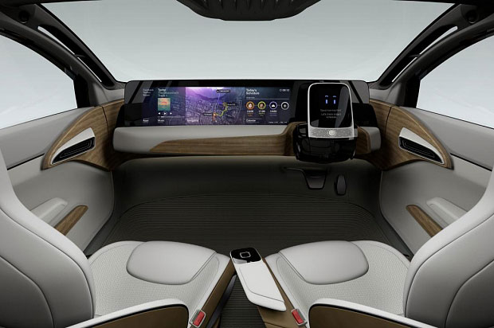
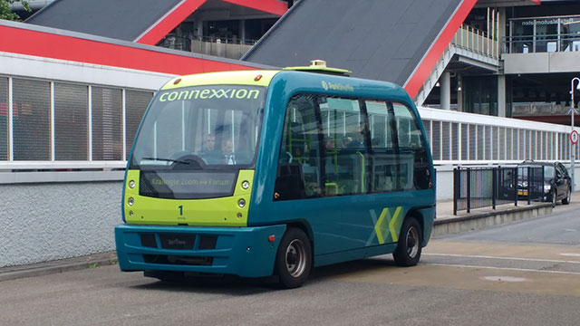

Zelfrijdende auto's
 Iedereen wilt natuurlijk in een zelfrijdende auto rijden. In de toekomst zal dit ook gaan gebeuren. Maar wat zijn de actuele ontwikkelingen in de auto-industrie met AI? Als we de ontwikkelingen voor de industrie zelf, zoals AI voor onderhoud en voor verkoop, ter zijde laten is het uiteindelijke doel bekend: de volledig autonome auto. Maar om daar te komen moet er veel gedaan worden aan vooral de prijs van de technologie, en het publiek -en daarmee de overheid- zullen ook een stap voorwaarts moeten maken in hun denken over AI.
Nederland heeft hier nu al een voortrekkende rol in in de wereld: zelfrijdende auto's mogen met RDW ontheffing nu al de weg op. Er bestaan al autonome bussen, die net als geautomatiseerde metrotreinen op een exclusieve baan rijden. Er lijkt in Nederland dus minder weerstand te bestaan tegen een AI die voertuigen controleert- wellicht komt dit door de dominante logistiek, die al lang AI robots gebruikt in warehouses, én op een fysiek enorme schaal (denk aan de haven van Rotterdam).
 Om te bepalen hoe ver we zijn met autonome auto's is de analyse van Barclays goed bruikbaar. In deze analyse wordt het pad naar de volledig autonome auto opgedeeld in 5 fases. In de eerste fase wordt elektronica geïntroduceerd die de chauffeur helpt- dit begon al in de jaren '80. In de 2e en 3e fase kan meer geavanceerde elektronica de controle al deels overnemen zoals Advanced Driver Assistance Systems (ADAS, denk bijvoorbeeld aan zelfparkerende auto's), vooral op de snelweg en niet in de hectische binnenstad (cruise control). In de 4e fase heeft de chauffeur nog controle in sommige omstandigheden, maar in de 5e fase is ook deze mogelijkheid weggenomen en is de auto volledig autonoom. De meer geavanceerde auto's zitten nu in de 3e fase, en grijpen soms zelfs al autonoom in, bijvoorbeeld bij noodstoppen.
En hier begint de echte uitdaging: de AI moet een relatie opbouwen met de chauffeur om diens gedrag goed te kunnen interpreteren om correct in te grijpen. Zo heeft Toyota zijn Concept-i auto uitgerust met een AI die het gedrag, zoals oplettendheid, en emoties analyseert en daar het aantal interventies op aanpast.
In de volgende tabel is te zien in welke sitauties een autonome auto ideaal is:
| Situatie | Mate van idealiteit |
|---|---|
| Bij vermoeidheid | 30% |
| Voor woon- werkverkeer | 29% |
| Op de snelweg | 28% |
| In de file | 27% |
| Lange afstanden | 15% |